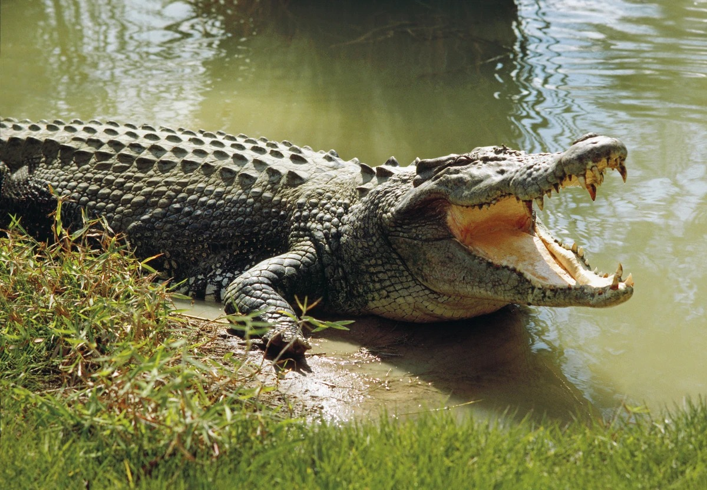

Cocodrilos
Definición
Los cocodrilos son animales feroces, depredadores de
cuerpo robusto con piel gruesa y grandes bocas dentadas,
que llevan vidas solitarias y territoriales. Los cocodrilos
son animales voraces, de grandes y fuertes mandíbulas, que
se desplazan por tierra y por agua muy rápido.
Hábitat
Los cocodrilos habitan en su mayoría en los contornos de
lagos, lagunas, ríos e incluso en agua salada, dependiendo
de la especie, ya que sin ser anfibios, son animales perfectamente
adaptados para el nado. Tienden a preferir las tierras bajas de la
zona climática intertropical en América, África, Asia y Oceanía.
Consejos
- Los cocodrilos deben tener un espacio suficiente
para moverse y nadar, con una fuente de agua a
una temperatura de 23° a 28°C
- No tires basura al mar, especialmente plásticos, que
pueden ser ingeridos por las tortugas.
- Deben alimentarse aproximadamente 3-4 veces por
semana cuando son jóvenes, reduciendo a 2-3 veces
por semana al crecer
